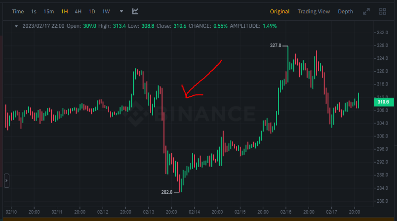
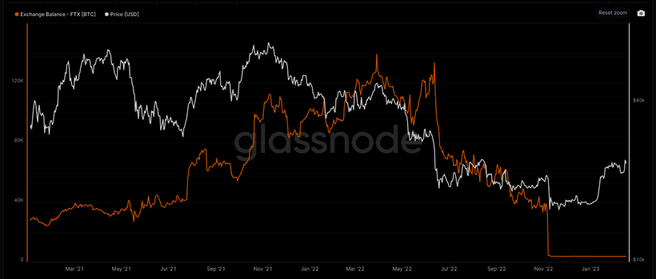
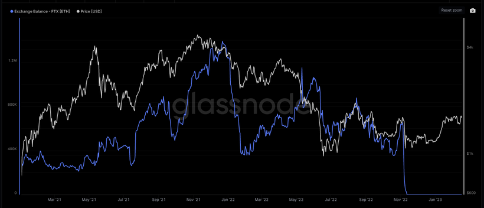
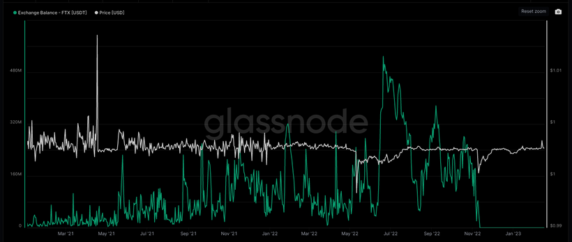
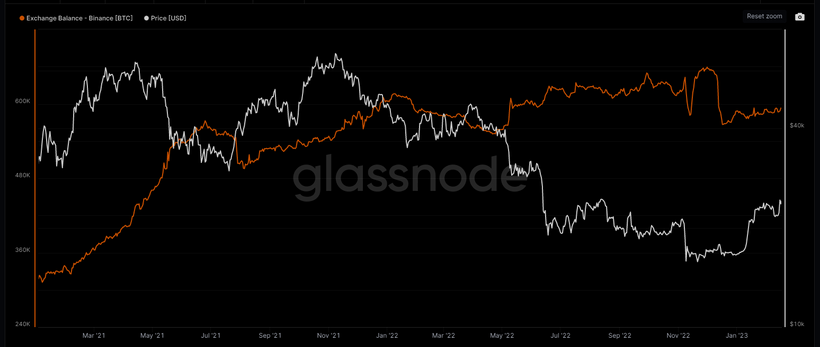
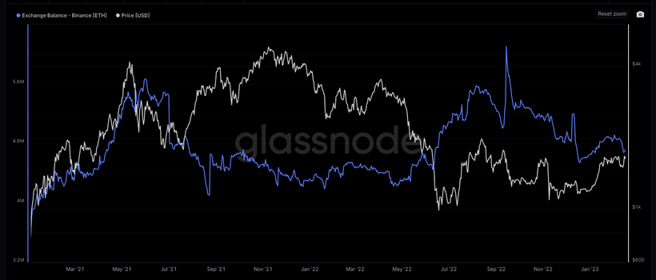
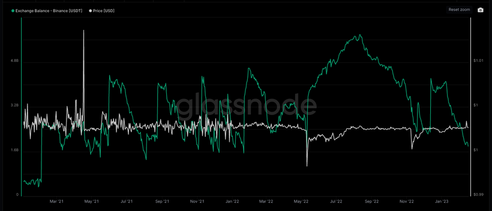

自FTX事件以來，幣圈都很擔心CEX倒閉等第三方/對手方風險（counterparty risk）。近兩週又不時傳出Binance FUD的新聞，到底如何自保呢？
FUD無處不在，這週FUD Bybit，令你把錢從Bybit搬到去Binance後；下週又FUD Binance，然後你又要把錢從Binance搬回Bybit。不止交易所，連穩定幣也是，可以上週FUD USDT，這週FUD USDC，下週FUD BUSD，簡直就是四面楚歌、杯弓蛇影。
首先，若你不是頻密炒賣者，那你把錢放在交易所就不對了；說了很多次，我在CEX有大量crypto是因為我是個頻密交易者，每天交易次數為3000次以上，因此我只能把短炒部分放在CEX上。可笑的是，網絡世界有很多盲毛笑我不懂使用冷錢包…
OK，那有甚麼指標可以顯示一家CEX是否會爆破呢？
首先，選擇交易所時，我一定會按交易所成交額選，而且要撇取虛假成交的交易所。按現時數據，首位為Binance，次選OKX，三選Bybit。
如果出現FUD，最簡單可以先留意該平台的平台幣，如Binance的BNB、OKX的OKB、Bybit的BIT等等。若出事，平台幣一定會出現大跌，因為平台幣市值就大約等於那個平台的價值。
如Binance早一週出現FUD，BNB就下跌了10%左右，請見下圖。

不過，不消一兩天，便已收復了失地，顯示FUD只是短暫的。
第二方法，就如早幾篇Patreon提到，可以留意該交易所內的BTC/USDT價格，尤其是perpetual contract，看有沒有與其他交易所相差很遠。如果該交易所有問題，market maker會先放棄護盤，因為他們害怕的話，會把錢從交易所撤出。沒有MM，那就會有價差。正常兩間交易所的價差為買賣差價+兩邊佣金，大約是0.02-0.03%；若價差明顯大於這數字，就要小心了。
第三方法，為最有效方法 — 看交易所BTC、ETH及USDT的儲備。以FTX為例，當時BTC balance如下：

ETH balance如下：

USDT balance如下：

你會發現，在FTX爆煲前一、兩天，儲備下跌速度很高。此刻，若你擔心Binance，可以看看Binance BTC儲備：

ETH儲備：

USDT儲備：

相比之下，Binance的出金只是九牛一毛，小巫見大巫。BTC及ETH都沒多大反應，純粹USDT儲備減少幅度與以往相近；倘真若USDT reserve大跌8成，那就要小心了。
當然，此刻安全不代表未來安全，希望大家學懂這些指標後，不要再來天天inbox問Binance安全嗎，而是有自己一套風險管理系統，加油！